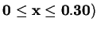
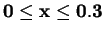
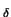
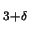
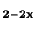
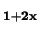

X-ray diffraction,
X-ray diffraction,
Dover, New York, 1990.
X-rays and crystals,
Nature (London) 90, 219 (1913).
The specular reflection of X-rays,
Nature (London) 90, 410 (1913).
The distribution of the electrons in atoms,
Nature (London) 95, 344 (1915).
Underneath the Bragg peaks: structural analysis of complex materials,
Underneath the Bragg peaks: structural analysis of complex materials,
Pergamon Press, Elsevier, Oxford, England, 2003.
Extended x-ray-absorption fine-structure technique. III. Determination of physical parameters.,
Phys. Rev. B 11, 4836-46 (1975).
X-ray absorption: principles, applications techniques of EXAFS, SEXAFS and XANES,
X-ray absorption: principles, applications techniques of EXAFS, SEXAFS and XANES,
J. Wiley and Sons, New York, 1988.
Nuclear magnetic resonance spectroscopy,
Nuclear magnetic resonance spectroscopy,
Pitman, London, 1983.
Dispersion of Rövrtöntgen rays,
Annalen der Physik (Berlin, Germany) 46, 809-823 (1915).
Reciprocal space instrumental effects on the real space neutron atomic pair distribution function,
J. Appl. Crystallogr. 37, 110-116 (2004).
PDFFIT, a program for full profile structural refinement of the atomic pair distribution function,
J. Appl. Crystallogr. 32, 572-575 (1999).
X-ray diffraction study of liquid sodium,
J. Chem. Phys. 4, 236-8 (1936).
Fourier analysis of X-ray patterns of vitreous SiO2 and B2O3,
J. Am. Ceram. Soc. 19, 202-6 (1936).
Pair correlations in solid lead near the melting temperature,
J. Phys. Chem. Solids 25, 1195 (1964).
Temperature dependence of the structure of liquid indium,
Phys. Rev. 149, 122-130 (1966).
Beyond crystallography: the study of disorder, nanocrystallinity and crystallographically challenged materials,
Chem. Commun. , 749-760 (2004).
Structural analysis of complex materials using the atomic pair distribution function - a practical guide,
Z. Kristallogr. 218, 132-143 (2003).
Real-space rietveld: full profile structure refinement of the atomic pair distribution function,
in Local Structure from Diffraction, edited by S. J. L. Billinge and M. F. Thorpe, page 137, New York, 1998, Plenum.
Measuring correlated atomic motion using X-ray diffraction,
J. Phys. Chem. A 103, 921-924 (1999).
Lattice dynamics and correlated atomic motion from the atomic pair distribution function,
Phys. Rev. B 67, 104301 (2003).
Chemical short range order obtained from the atomic pair distribution function,
Z. Kristallogr. 217, 47 (2002).
Local atomic structure and superconducivity of Nd2-xCexCuO4-y: a pair distribution function study,
Ph.D Thesis,, 1992.
Direct observation of lattice polaron formation in the local structure of La1-xCaxMnO3,
Phys. Rev. Lett. 77, 715-718 (1996).
Neutron diffraction evidence of microscopic charge inhomogeneities in the CuO2 plane of superconducting La2-xSrxCu4 (

,Phys. Rev. Lett. 84, 5856-5859 (2000).
Charge-stripe ordering from local octahedral tilts: underdoped and superconducting La2-xSrxCuO4 (

),Phys. Rev. B 59, 4445 (1999).
Reexamination of the second order structural phase transition in La2-xAxCuO4 (A=Ba,Sr),
Physica B 241-243, 795 (1998).
Structure of intercalated Cs in zeolite ITQ-4: an array of metal ions and electrons confined in a pseudo-1D nanoporous host,
Phys. Rev. Lett. 89, 075502 (2002),
(Highlighted in Phys. Rev. Focus: http://focus.aps.org/story/v10/st4).
Structure of V2O5.nH2O xerogel solved by the atomic pair distribution function technique,
J. Am. Chem. Soc. 124, 10157 (2002).
Structure of nanocrystalline materials using atomic pair distribution function analysis: study of LiMoS2,
Phys. Rev. B 65, 092105 (2002).
Application of atomic pair distribution function analysis to materials with intrinsic disorder. Three-dimensional structure of exfoliated-restacked WS2: not just a random turbostratic assembly of layers,
J. Am. Chem. Soc. 122, 11571 (2000).
The radial distribution curves of liquids by diffraction methods,
Rep. Prog. Phys. 25, 395-440 (1962).
Diffraction studies of glass structure: the first 70 years,
Glass Physics and Chemistry 24, 148-179 (1998).
Polyhedral units and network connectivity in calcium aluminosilicate glasses from high energy X-ray diffraction,
Phys. Rev. Lett. 85, 3436 (2000).
Local structure study of InxGa1-xAs semiconductor alloys using high energy synchrotron X-ray diffraction,
Phys. Rev. B 63, 205202 (2001).
Local atomic strain in ZnSe1-xTex from high real space resolution neutron pair distribution function measurements,
Phys. Rev. B 63, 165211 (2001).
To RMC or not to RMC? The use of reverse Monte Carlo modelling,
Curr. Opin. Solid St. M. 7, 41-47 (2003).
Application of the reverse Monte Carlo method to crystalline materials,
J. Appl. Crystallogr. 34, 630-638 (2001).
Dynamic structural disorder in cristobalite: neutron total scattering measurement and reverse Monte Carlo modelling,
J. Phys. Condens. Mat. 13, 403-423 (2001).
Tests of the empirical potential structure refinement method and a new method of application to neutron diffraction data on water,
Mol. Phys. 99, 1503-1516 (2001).
The radial distribution functions of water and ice from 220 to 673 K and at pressures up to 400 MPa,
Chem. Phys. 258, 121-137 (2000).
PDFgetX2: a GUI driven program to obtain the pair distribution function from X-ray powder diffraction data,
J. Appl. Crystallogr. 37, 678 (2004).
PDFgetN: a user-friendly program to extract the total scattering structure function and the pair distribution function from neutron powder diffraction data,
J. Appl. Crystallogr. 33, 1192-1192 (2000).
Building a high resolution total scattering powder diffractometer - upgrade of NPD at MLNSC,
Appl. Phys. A 74, s163-s165 (2002).
PDFgetX: a program for determining the atomic pair distribution function from X-ray powder diffraction data,
J. Appl. Crystallogr. 34, 536 (2001).
An image plate chamber for X-ray diffraction experiments in Debye-Scherrer geometry,
Rev. Sci. Instrum. 71, 4007 (2000).
Progress in science and technology on photostimulable BaFX : Eu2+ (X = Cl, Br, I) and imaging plates,
Journal of Luminescence 100, 307-315 (2002).
Physical model of photostimulated luminescence of X-ray-irradiated BaFBr:Eu2+,
J. Appl. Phys. 64, 1405-1412 (1988).
Mechanism of photostimulated luminescence in BaFCl-Eu2+, BaFBr-Eu2+ phosphors,
Journal Of Luminescence 31-2, 266-268 (1984).
Imaging plates for use with synchrotron-radiation,
J. Synchrotron Rad. 2, 13-21 (1995).
Photostimulated luminescence process in BaFBr-Eu2+ containing F(Br-) and F(F-) centers,
Journal of Luminescence 48-9, 481-484 (1991).
A new type of X-ray area detector utilizing laser stimulated luminescence,
Nucl. Instrum. Methods A 246, 572-578 (1986).
Design and performance of an imaging plate system for X-ray-diffraction study,
Nucl. Instrum. Methods A 266, 645-653 (1988).
Imaging plate for time-resolved X-ray measurements,
Rev. Sci. Instrum. 60, 1552-1556 (1989).
The point-spread function of X-ray image-intensifiers CCD-camera and imaging-plate systems in crystallography - assessment and consequences for the dynamic-range,
J. Appl. Crystallogr. 27, 868-877 (1994).
X-ray-energy dependence and uniformity of an imaging plate detector,
Nuclear Instruments & Methods In Physics Research Section A-Accelerators Spectrometers Detectors And Associated Equipment 310, 369-372 (1991).
Breakdown of intermediate-range order in liquid GeSe2 at high pressure,
Nature 414, 622 (2001).
Multichannel collimator for structural investigation of liquids and amorphous materials at high pressures and temperatures,
Rev. Sci. Instrum. 73, 3570 (2002).
Devitrification studies of Zr-Pd and Zr-Pd-Cu metallic glasses,
J. Non-Cryst. Solids 317, 62-70 (2003).
Diffuse scattering data acquisition techniques,
Phase Transit. 67, 165-195 (1998).
On the correction of reflection intensities recorded on imaging plates for incomplete absorption in the phosphor layer,
J. Appl. Crystallogr. 31, 302 (1998).
Rapid acquisition pair distribution function analysis (RA-PDF),
J. Appl. Crystallogr. 36, 1342-1347 (2003).
Cryogenically cooled bent double-Laue monochromator for high-energy undulator X-rays (50-200 KeV),
J. Synchrotron Rad. 9, 317 (2002).
Two-dimensional detector software: from real detector to idealised image or two-theta scan,
High Pressure Res. 14, 235-248 (1996).
FIT2D v9.129 reference manual v3.1,
ESRF Internal Report ESRF98HA01T (1998).
in-situ X-ray diffraction and solid-state NMR study of the fluorination of
J. Am. Chem. Soc. 123, 1694 (2001).
Probing Oxygen Motion in Disordered Anionic Conductors with 17O and 51V MAS NMR Spectroscopy,
Science 297, 1317 (2002).
The correction of reflection intensities for incomplete absorption of high-energy X-rays in the CCD phospher,
J. Appl. Crystallogr. 35, 356 (2002).
General Structure Analysis System,
Report No. LAUR-86-748, Los Alamos National Laboratory, Los Alamos, NM 87545, 1987.
A study of the structural phase transitions in AlF3: X-ray powder diffraction, DSC and Raman scattering investigations of the lattice dynamics and phonon spectrum,
J. Phys. Condens. Mat. 2, 5663 (1990).
Ionic conductivities of Bi4V2-xMxO11-x/2 (M = Ti, Zr, Sn, Pb) solid solutions,
Solid State Ionics 81, 225-33 (1995).
Hydrothermal synthesis of the microporous aluminophosphate CoAPO5; in-situ time-resolved synchrotron x-ray powder diffraction studies,
Catal. Today 39, 301-309 (1998).
DISCUS: a program for diffuse scattering and defect-structure simulation,
J. Appl. Crystallogr. 30, 171-175 (1997).
Ferromagnetic compounds of manganese with perovskite structure,
Physica (Amsterdam) 16, 337-49 (1950).
Electrical conductivity of ferromagnetic compounds of manganese with perovskite structure,
Physica (The Hague) 16, 599-600 (1950).
Interaction between the d shells in the transition metals,
Phys. Rev. 81, 440-444 (1951).
Interaction between the d-shells in the transition metals. II. Ferromagnetic compounds of manganese with perovskite structure,
Phys. Rev. 82, 403-405 (1951).
Interaction between the d-shells in the transition metals. III. Calculation of the Weiss factors in Fe, Co, and Ni,
Phys. Rev. 83, 299-301 (1951).
Considerations on double exchange,
Phys. Rev. 100, 675-81 (1955).
Neutron-diffraction study of the magnetic properties of the series of perovskite-type compounds (La1-x,Cax)MnO3,
Phys. Rev. 100, 545-63 (1955).
Low temperature magnetoresistance and the magnetic phase diagram of La1-xCaxMnO3,
Phys. Rev. Lett. 75, 3336 (1995).
Theory of the role of covalence in the perovskite-type manganites [La,M(II)]MnO3,
Phys. Rev. 100, 564-573 (1955).
Crystal distortion in magnetic compounds,
J. Appl. Phys. 31, 14S-23S (1960).
Electron correlation and ferromagnetism of transition metals,
Progr. Theoret. Phys. (Kyoto) 30, 275-89 (1963).
Ionic ferromagnet (La,Pb)MnO3. I. Growth and characteristics of single crystals,
Canadian Journal of Physics 47, 2691-6 (1969).
Ionic ferromagnet (La,Pb)MnO3. III. Ferromagnetic resonance studies,
Canadian Journal of Physics 47, 2703-8 (1969).
Ionic ferromagnet (La,Pb)MnO3. V. Electric transport and ferromagnetic properties,
Canadian Journal of Physics 48, 2023-31 (1970).
Further experimental investigations on some ferromagnetic oxide compounds of manganese with perovskite structure,
Physica (The Hague) 20, 49-66 (1954).
Mgnetoresistance measurements on the magnetic semiconductor NdPbMnO3,
Physica B 155, 362 (1989).
Giant negative magnetoresistance in perovskitelike La2/3Ba1/3MnOx ferromagnetic-films,
Phys. Rev. Lett. 71, 2331 (1993).
Magnetoresistance in magnetic manganese oxide with intrinsic antiferromagnetic spin structure,
Appl. Phys. Lett. 63, 1990 (1993).
Giant magnetoresistance in La1-xSrxMnOz films near room temperature,
Appl. Phys. Lett. 65, 2108-10 (1994).
Thousandfold change in resistivity in magnetoresistive La-Ca-Mn-O films,
Science (Washington, DC, United States) 264, 413-15 (1994).
Colossal magnetoresistance of 1,000,000-fold magnitude achieved in the antiferromagnetic phase of La1-xCaxMnO3,
Appl. Phys. Lett. 67, 1783-5 (1995).
Double Exchange alone does not explain the resistivity of La1-xSrxMnO3,
Phys. Rev. Lett. 74, 5144 (1995).
Electronic aspects of the ferromagnetic transition in manganese perovskites,
Phys. Rev. Lett. 76, 4215-4218 (1996).
Dynamic Jahn-Teller effect and colossal magnetoresistance in La1-xSrxMnO3,
Phys. Rev. Lett. 77, 175 (1996).
Optical conductivity of manganites: crossover from Jan-Teller small polaron to coherent transport in the ferromagnetic state,
Phys. Rev. B 58, 16093 (1998).
Electronic structure of the perovskite oxides: La1-xCaxMnO3,
Phys. Rev. Lett. 76, 960-3 (1996).
Nanoscale phase separation and colossal magnetoresistance,
Nanoscale phase separation and colossal magnetoresistance,
Springer-Verlag, Amsterdam, 2003.
Colossal magnetoresistance oxides,
Colossal magnetoresistance oxides, chapter 5,
Gordon & Breach, New York, 1999.
Variation of optical gaps in perovskite-type 3D transition-metal oxides,
Phys. Rev. B 48, 17006-17009 (1993).
Optical-Spectra of Pr2-XCexCUO 4-

Crystals - Evolution of in-Gap States With Electron Doping,Phys. Rev. B 48, 6597-6603 (1993).
Systematic variation of the electronic-structure of 3D transition-metal compounds,
Phys. Rev. B 52, 7934-7938 (1995).
Electronic-structure of 3D-transition-metal compounds by analysis of the 2P core-level photoemission spectra,
Phys. Rev. B 46, 3771-3784 (1992).
Lattice effects on the magnetoresistance in doped LaMnO3,
Phys. Rev. Lett. 75, 914 (1995).
Substantial pressure effects on the electrical-resistivity and ferromagnetic transition-temperature of La1-xCaxMnO3,
Phys. Rev. B 52, R7006 (1995).
Stripes induced by orbital ordering in layered manganites,
Phys. Rev. Lett. 86, 4922 (2001).
A-type antiferromagnetic and C-type orbital-ordered state in LaMnO3 using cooperative Jahn-Teller phonons,
cm (1999),
Unpublushed. preprint avaialable at http://xxx.lanl.gov/abs/cond-mat/9907034.
Structural phase diagram of La1-xSrxMnO 3-: Relationship to magnetic and transport properties,
Phys. Rev. B 54, 6172 (1996).
Colossal magnetoresistance,
J. Phys. Condens. Mat. 9, 8171 (1997).
The physics of manganites: structure and transport,
Rev. Mod. Phys. 73, 583-628 (2001).
Ferromagnetism vs. charge/orbital ordering in mixed-valent manganites,
in Colossal Magnetoresistant Oxides, Gordon and Breach, 1999.
Doping-induced transition from double exchange to charge order in La1-xCaxMnO3 near x = 0.5,
unpublished, 1998.
Polarons in manganites: now you see them, now you don't,
in Physics of Manganites, edited by T. A. Kaplan and S. D. Mahanti, page 201, Klewer Academic/Plenum, New York, 1999.
Phase digram of La1-xCaxMnO3, 2000,
personal communication.
Pressure induced polaronic to itinerant electronic transition in La1-xSrxMnO3 crystals,
Phys. Rev. Lett. 79, 3234 (1997).
Pressure and magnetic-field effects on charge ordering in La0.9Sr0.1MnO3,
Phys. Rev. B 57, 14680 (1998).
Pressure effects on the magnetoresistance in doped manganese perovskites,
Phys. Rev. B 52, 15046-9 (1995).
Temperature evolution of the local atomic structure in oxygen isotope substituted Pr0.525La0.175Ca0.3MnO3,
Appl. Phys. A 74, 892 (2002).
Oxygen-isotope effect of the paramagnetic-insulating to ferromagnetic-metallic transition in La1-xCaxMnO3,
Phys. Rev. B 58, 5189 (1998).
Metal-insulator transition induced by oxygen isotope exchange in the magnetoresistive perovskite manganites,
Nature 391, 159 (1998).
Strong oxygen-mass dependence of the thermal expansion coefficient in the manganites (La1-xCax)1-yMn1-yO3,
Phys. Rev. Lett. 78, 955 (1997).
Effect of oxygen isotope substitution on magnetic structure of (La0.25Pr0.75)0.7Ca0.3MnO3,
Phys. Rev. B 60, 383 (1999).
Giant oxygen isotope shift in the magnetoresistive perovskite La1-xCaxMnO3+y,
Nature 381, 676 (1996).
Metal-insulator transition induced by isotope exchange in colossal magnetoresistance manganites,
J. Appl. Phys. 83, 7369 (1998).
Neutron diffraction study of the Jahn-Teller distortion in stoichiometric LaMnO3,
Phys. Rev. B 57, R3189 (1998).
Measurement of the local Jahn-Teller distortion in LaMnO3.006,
Phys. Rev. B 60, 9973 (1999).
Cooperative Jahn-Teller effect and electron-phonon coupling in La1-xAxMnO3,
Phys. Rev. B 53, 8434 (1996).
Local distortion in LaMnO across the Jahn-Teller transition,
J. Magn. Magn. Mater. 233, 88-90 (2001).
Cooperative Jahn-Teller phase transition in LaMnO3 studied by X-ray absorption spectroscopy,
Phys. Rev. Lett. 90 (2003).
Order-disorder in the Jahn-Teller transition of LaMnO: a Raman scattering study,
Phys. Rev. B 62, 11304-11307 (2001).
Paramagnetic phase in single-crystal LaMnO3,
Phys. Rev. B 60, R15002-R15004 (1999).
ESR and magnetization in Jahn-Teller-distorted LaMnO

: correlation with crystal structure,Phys. Rev. B 60, 10199-10205 (1999).
Volume collapse in LaMnO3 caused by an orbital order-disorder transition,
Phys. Rev. B 68 (2003).
Structural effects on the magnetic and transport properties of perovskite A1-xA
Phys. Rev. B 56, 8265 (1997).
The crystal structure of lanthanum manganate(III), LaMnO3, at room temperature and at 1273 K under N2,
J. Solid State Chem. 119, 191-6 (1995).
Notes on the analysis of data for pair distribution functions,
in From semiconductors to proteins: beyond the average structure, edited by S. J. L. Billinge and M. F. Thorpe, pages 105-128, New York, 2002, Kluwer/Plenum.
Advances in pair distribution profile fitting in alloys,
in Local Structure from Diffraction, edited by S. J. L. Billinge and M. F. Thorpe, page 157, New York, 1998, Plenum.
Jahn-Teller transition in La1-xSrxMnO3 in the low-doping region ( 0 < x
Phys. Rev. B 66, 054403/1-054403/8 (2002).
(La1-xCax)MnO3. I. Magnetic structure of LaMnO3,
J. Phys. Soc. Jpn 29, 606-15 (1970).
(La1-xCax)MnO3. II. Magnetic properties,
J. Phys. Soc. Jpn 29, 615-22 (1970).
PDF form factor - probe the intermediate range structure,
J. Appl. Crystallogr. (2004),
unpublished.
Vibronic superexchange in single-crystal LaMn1-xGaxO3,
Phys. Rev. B 63, 184423/1-184423/5 (2001).
Orbital order-disorder transition in single-valent manganites,
Phys. Rev. B 68 (2003).
Exchange interactions in the perovskites Ca1-xSrxMnO3 and RMnO3 (R=La,Pr,Sm),
Physical Review B: Condensed Matter and Materials Physics 68, 054403/1-054403/7 (2003).
Giant magnetoresistance of manganese oxides with a layered perovskite structure.,
Nature (London) 380, 141-4 (1996).
Spin, charge, and lattice states in layered magnetoresistive oxides,
J. Phys. Chem. B 105, 10731-10745 (2001).
Lattice effects in magnetoresistive manganese perovskites,
Nature 392, 147 (1998).
Neutron scattering studies on magnetic structure of teh double-layered manganite La2-2xSr1+2xMn2O7 (0.30x0.50),
J. Phys. Chem. Solids 60, 1161 (1999).
Interplay of spin and orbital ordering in the layered colossal magnetoresistance manganite La2-2xSr1+2xMn2O7 (0.5x1.0),
Phys. Rev. B 62, 15096-15111 (2000).
Interplane tunneling magnetoresistance in a layered manganite crystal,
Science (Washington, D. C.) 274, 1698-1701 (1996).
Commensurate to incommensurate charge ordering and its real-space images in La0.5Ca0.5MnO3,
Phys. Rev. Lett. 76, 4042 (1996).
Interplay of the CE-type charge ordering and the A-type spin ordering in half-doped bilayer manganite LaSr2Mn2O7,
J. Phys. Soc. Jpn 68, 2202 (1999).
Charge ordering and phase competition in the layered perovskite LaSr2Mn2O7.,
Phys. Rev. B 61, 15269-15276 (2000).
Successive structural transitions coupled with magnetotransport properties in LaSr2Mn2O7,
Phys. Rev. B 58, 11081-11084 (1998).
Competing instabilities and metastable states in (Nd,Sm)1/2Sr1/2MnO3,
Phys. Rev. Lett. 76, 3184-7 (1996).
Magnetism and the chemical bond,
Magnetism and the chemical bond,
J. Wiley and Sons, New York, 1963.
Interrelation between orbital polarization and magnetic structure in bilayer manganites,
Phys. Rev. B 59, 14153 (1999).
Complex orbital state in manganites,
Phys. Rev. B 62, 11576-11580 (2000).
Resonant x-ray scattering from orbital ordering in LaMnO3,
Phys. Rev. Lett. 81, 582-585 (1998).
Two-dimensional charge-transport and spin-valve effect in the layered antiferromagnet Nd0.45Sr0.55MnO3,
Phys. Rev. Lett. 82, 4316 (1999).
Local lattice effects in the layered manganites La1.4Sr1.6Mn2O7,
Phys. Rev. Lett. 80, 3811 (1998).
Extending the n = 2 Ruddlesden-Popper solid solution La2-2xSr1+2xMn2O7 beyond x = 0.5: synthesis of Mn4+-rich compounds,
Chem. Commun. 3, 1389 (1999).
The role of Coulomb correlation in magnetic and transport properties of doped manganites: La0.5Sr0.5MnO3 and LaSr2Mn2O7,
J. Phys. Condens. Mat. 14, 4533-4542 (2002).
Simultaneous structural, magnetic, and electronic transitions in La1-xCaxMnO3 with x = 0.25 and 0.5,
Phys. Rev. Lett. 75, 4488 (1995).
Enhanced stability of charge and orbital order in La0.78Sr2.22Mn2O7,
Phys. Rev. B 69, 104403 (2004).
Antiferromagnetic metallic state in the heavily doped region of perovskite manganites,
Phys. Rev. B 58, 5544 (1998).
Orbital structure and magnetic ordering in layered manganites: universal correlation and its mechanism,
Phys. Rev. B 6310, 104401-6 (2001).
Crystallographic and magnetic structures of La1-xBaxMn1-xMxO3 (M= manganese or titanium),
J. Solid State Chem. 3, 238-42 (1971).
Evidence for charge localization in the ferromagnetic phase of La1-xCaxMnO3 from high real-space-resolution X-ray diffraction,
Phys. Rev. B 62, 1203 (2000).
Strain, nano-phase separation, multi-scale structures and function of advanced materials,
in Intrinsic Multiscale Structure and Dynamics of Complex Electronic Oxides, edited by S. Shenoy and A. R. Bishop, pages 25 - 40, Singapore, 2003, World Scientific.
Orbital occupancy transition in La

Sr
MnO at x = 0.54,unpub (2003),
unpublished.
unpublished.
Planar nets of Ti atoms comprising squares and rhombs in the new binary antimonide Ti2Sb,
J. Am. Chem. Soc. 126, 8295-8302 (2004).
Combining the structure controlling factors for metal-rich compounds to a structure map,
Zeitschrift Fur Anorganische und Allgemeine Chemie 626, 1851-1853 (2000).
Structure prediction using our semiempirical structure map: the crystal structure of the new arsenide ZrTiAs,
Chem. Mater. 13, 4053-4057 (2001).
Crystal structure predictions: the crystal and electronic structure of Zr 1-V 1+As,
J. Solid State Chem. 169, 96-102 (2002).
In-situ time resolved powder diffaction studies in heterogenous catalysis; coupling the study of long range and local structural changes,
Commission on Powder Diffraction Newsletter, International Union of Crystallography , 24-25 (2003).
Principles and practice of heterogeneous catalysis,
Chemistry & Industry (London) , 952, 954 (1997).
Reduction of CuO in H2: in situ time-resolved XRD studies,
Catalysis Letters 85, 247-254 (2003).
Probing local and long-range structure simultaneously: an in-situ study of the high-temperature phase transition of
J. Am. Chem. Soc. 126, 4756-4757 (2004).
Evidence for nano-scale inhomogeneities in bilayer manganites in the Mn4+ rich region: 0.54
J. Phys. Chem. Solids 65, 1423-1429 (2004).
Reentrant charge-ordering transition and phase separation in the layered perovskite La2-2xSr1+2xMn2O7,
Phys. Rev. B 6417, 4413 (2001).
Structural properties and charge-ordering transition in LaSr2Mn2O7,
Phys. Rev. B 57, 3205 (1998).
Re-entrant charge-ordering behaviour in the layered manganites La2-2xSr1+2xMn2O7,
J. Phys. Condens. Mat. 13, 3655-3663 (2001).
High real-space resolution measurement of the local structure of Ga1-xInxAs using X-ray diffraction,
Phys. Rev. Lett. 83, 4089 (1999).
Calculation of the intensity of secondary scattering of X-rays by non-crystalline materials,
Acta Crystallogr. A 27, 264 (1971).
Calculation of the intensity of secondary scattering of X-rays by non-crystalline materials. II. Moving sample transmission geometry,
Acta Crystallogr. A 28, 155 (1972).
Multiple scattering of X-rays in the case of isotropic samples,
J. Appl. Crystallogr. 23, 11 (1990).
Multiple scattering calculations of X-ray absorption spectra,
Phys. Rev. B 52, 2995 (1995).
New analytical scattering factor functions for free atoms and ions,
Acta Crystallogr. A 51, 416 (1995).
The accuracy of experimental radial distribution functions for metallic glasses,
J. Appl. Crystallogr. 17, 61 (1984).
The separation of coherent and incoherent Compton X-ray scattering,
Brit. J. Appl. Phys. 15, 1301 (1964).
Analytic approximations to incoherently scattered X-ray intensities,
Acta Crystallogr. A A31, 600-2 (1975).
PDFgetX2 user's guide,
Michigan State University, Department of Physics and Astronomy, v1.0 edition, 2004.
Teaching diffraction using computer simulations over the internet,
J. Appl. Crystallogr. 34, 767 (2001).
Accuracy of pair distribution function analysis applied to crystalline and noncrystalline materials,
Acta Crystallogr. A A48, 336-46 (1992).
Determination of standard uncertainties in fits to pair distribution functions,
Acta Cryst. A 60, 315-317 (2004).
The correction of reflection intensities for incomplete absorption of high-energy X-rays in the CCD phospher,
Nature 35, 356 (2002).